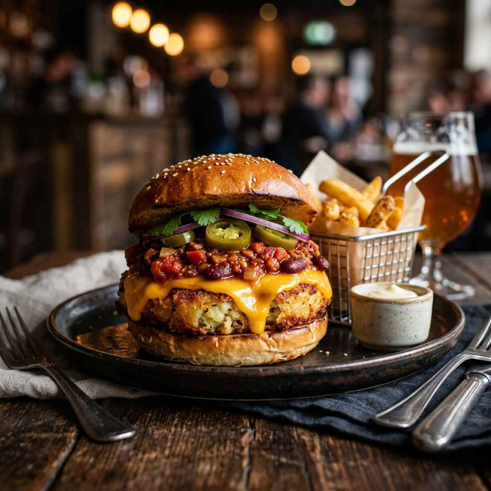

A decadent burger loading a crispy potato patty and melted cheddar cheese with a rich soy granule chili sauce.

Tip: Tap items to check them off as you prep!
Follow steps sequentially. Mark completed steps to keep track.
To begin making the Veg Chili Cheese Burgers Recipe, we will first pressure cook the potatoes and keep it ready.
Cook them for 5 whistles in a pressure cooker.
Once done allow the pressure to release naturally and peel off the skin.
Add them into a bowl and mash it using a potato masher.Add onions, salt and red chilli powder and bind it together.
Shape them into medium sized cutlets and leave it in the fridge to rest until you move on to make the sauce.To make the sauce, heat a flat skillet with oil on medium heat, add garlic and allow it soften for few seconds.Add chopped onions and saute until they turn golden brown.
Add chopped capsicum and saute for a few minutes.
Add in chopped tomatoes and sprinkle with a bit of salt and saute till they turn mushy.
Also add in the tomato puree and all the seasonings like, red chilli powder, cumin powder, red chilli flakes, dried oregano, tobacco sauce and honey.Keep sautéing until the tomatoes are cooked, you will notice the tomatoes will change color and the raw smell goes away.At the end add the soya granules and salt to taste.
Add about 1/4 cup of water and allow it to boil for 4-6 minutes minutes.
Let the sauce be little gravish.Switch off the heat, heat a flat skillet for the patties to shallow fry them.
Take the patties out of the fridge.
Beat an egg into a bowl and also keep the bread crumbs ready over a plate.Carefully dip the patties into the egg and place them over the bread crumbs and coat them well on either side Dust off the excess bread crumbs.Place the crumb dipped patties on to the hot skillet and drizzle some oil on top.
Cook on either side for atleast 10 minutes.
Till you can see brown color crispy layer on top.Do the same for the rest of the patties and set aside.Once done, add a tablespoon of butter on the same skillet and cut the burger bun in to half horizontally and toast them on the tawa.
Toast till the burger buns are golden brown and crisp.Take a cooked patty, spoon two tablespoon of the sauce on top, place a cheese slice over it and microwave the patty for just 10 seconds until you see the cheese melt.Take the patty out, spread some of the sauce on the base of the burger bun and place the patty with cheese on top and add few slices of jalapeno and close it with the burger top and serve.
Do the same for the rest of the burger.Serve the Veg Chili Cheese Burgers Recipe along with baby potato stir fry and Mango Iced Tea Recipe to make it a complete meal.